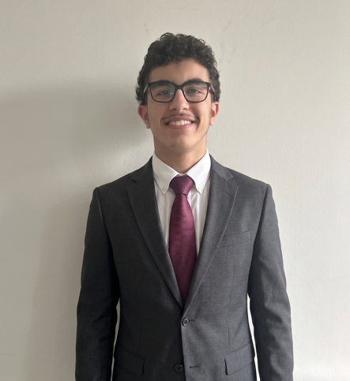

Actuellement en deuxième année de BUT Informatique (parcours Réalisation d'applications). Passionné par la logique algorithmique et la structuration des données, je me spécialise dans le développement logiciel et l'administration de bases de données. Mon parcours initial en STMG m'a apporté une excellente compréhension des enjeux métiers et de la gestion de projet, que j'allie aujourd'hui à mes compétences techniques. Rigoureux et persévérant, j'applique la même discipline dans mon code que dans ma pratique sportive quotidienne.
Développement, Algorithmique avancée, Programmation Orientée Objet, Bases de Données.
Management, Droit et compréhension des besoins des organisations.
Développement complet d'un jeu interactif. Implémentation du moteur logique, vérification des conditions de victoire, et création de "bots" adversaires basés sur des algorithmes de prise de décision. Interface gérée via Pygame.
Analyse des besoins métiers et conception de l'architecture d'une base de données relationnelle. Création des modèles conceptuels (MCD), structuration des tables, et implémentation de requêtes SQL complexes et de vues sous PostgreSQL.
Développement de scripts sous environnement Linux pour l'automatisation de tâches. Gestion stricte des utilisateurs, contrôle poussé des droits d'accès, et manipulation des priorités de processus système.
Esprit d'équipe et stratégie
Discipline et dépassement de soi
Documentation et présentations orales